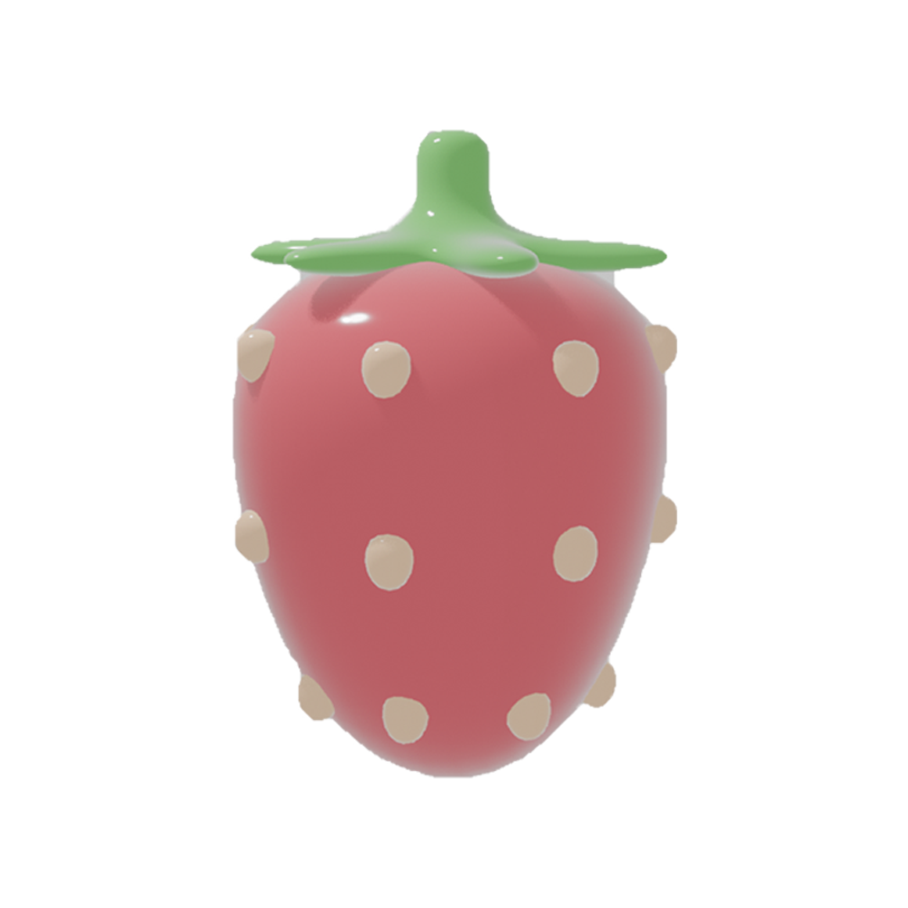

All About
Logging

Why should we log?
Keeping a log of what we eat is important because it helps us become more aware of our daily habits and the choices we make without thinking. By tracking meals and snacks, we can spot patterns—like eating too little, overeating at certain times, or relying on foods that do not make us feel our best. It also helps us understand the connection between what we eat and how we feel, both physically and mentally. Overall, food logging supports more intentional, balanced decisions and can be a useful tool for reaching personal health goals.